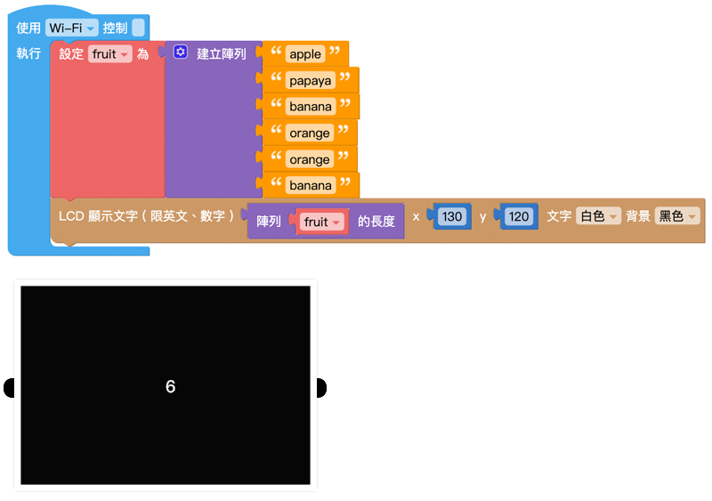
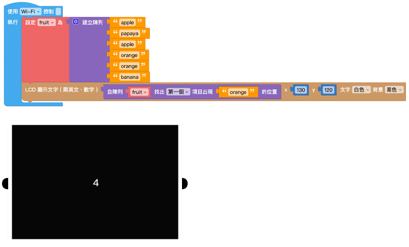
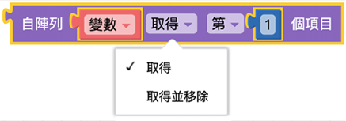

数组
数组可以将数字、文本、列表或变量，按照顺序组合起来，这些按序排列资料集合就称作数组。一个数组可以再细分为多个项目，或是一个数组内还包含其他数组。在进行比较复杂的运算时，也会通过数组的操作来实现。
建立数组、空数组
- 「建立数组」积木可以通过指定位置放入对应的内容，建立一个带有数值的数组。
- 「空数组」积木会建立一个数组容器，但会是一个里面没有包含任何项目的数组。
点击积木的「设定」按钮，可以改变量组内的项目数量，当数量为 0，积木就会变成空数组，可以藉由后续操作改变量组内的项目内容。
示例：展示数组内的所有水果
- 将「变量 fruit」设定为数组，并在数组项目中放入各种水果名称。
- 使用「LCD 显示文字」积木显示「变量 fruit」。
- 避免文字显示超出屏幕，调整 x 成 50。
按下执行，可以看到 Web:AI 屏幕显示 ['apple', 'orange', 'banana']。

重复数组内项目
「重复数组内项目」积木可以建立一个数组，并让数组内的项目重复特定数量。当数组内需要填入大量重复的项目时，就只需要设定一次。

示例：铅笔盒内有 5 支笔
- 使用「变量 pencil box」，后面放入「重复数组内项目」积木。
- 将「文字」积木放入数组中，并输入「pen」。
- 使用「LCD 显示文字」积木显示「变量 pencil box」。
- 避免文字显示超出屏幕，调整 x 成 50。
按下执行，可以看到 Web:AI 屏幕显示 ['pen', 'pen', 'pen', 'pen', 'pen']。

数组长度
「数组长度」积木可以取得个数组的项目总数。
如果是空数组则数组长度为 0。

示例：查看数组中有多少水果栏位？
- 将「变量 fruit」设定为数组，并在数组项目中放入各种水果名称。
- 使用「变量 number」作为水果栏位的数量，放入「数组长度」积木，后方放入「变量 fruit」。
- 使用「LCD 显示文字」积木显示「变量 number」。
按下执行，可以看到 Web:AI 屏幕显示 6。

因为「数组长度」积木读取的是数组的项目数量 ( 水果栏位数量 )，所以即使项目中没有放入水果，屏幕也会显示相同的数字。
索引项目位置
「索引项目位置」积木能在一个数组中，从最前面或最后面，找到特定项目所在的位置，并返回该位置的顺序号码。
示例：水果数组中，第一颗橘子出现在什么位置？
- 使用「变量 fruit」和「数组」积木，并在数组项目中放入各种水果名称。
- 设定「变量 order」，后方放入「索引项目位置」积木，从「fruit」数组最前面索引项目「orange」。
- 使用「LCD 显示文字」积木显示「变量 order」。
按下执行，可以看到 Web:AI 屏幕显示 4，代表第一颗橘子出现在 第 4 个位置。

取得数组内容
「取得数组内容」积木可以取得数组中某个项目的值、或是取得某个项目的值之后，同时移除该项目。 ( 项目取得方式包含：第几个、倒数第几个、第一个、最后一个和随机 )

示例：找到第 3 个水果
- 使用「变量 fruit」和「数组」积木，并在数组项目中放入各种水果名称。
- 使用「LCD 显示文字」积木，显示「取得数组」积木取得数组中的第 3 项。
按下执行，可以看到 Web:AI 屏幕显示 cherry，代表数组中的第 3 个项目是 cherry。

示例：移除第 3 个水果，并说出后来的第 3 个水果
- 接续上一个示例，完成建立数组。
- 在数组后面使用自「数组 fruit」移除第 3 个项目。
- 使用「LCD 显示文字」积木，显示「取得数组」积木取得数组中的第 3 项。
按下执行，可以看到 Web:AI 屏幕显示 orange，代表原本数组中的第 3 个项目 cherry 被移除，改由原本的第 4 个项目 orange 递补。
设定数组内容
「设定数组内容」积木可以针对数组的项目进行设定或移除。 ( 项目取得方式包含：第几个、倒数第几个、第一个、最后一个和随机 )

示例：将第 3 个水果改为 cherry
- 使用「变量 fruit」和「数组」积木，并在数组项目中放入各种水果名称。
- 下方使用自「数组 fruit」中设定第 3 个项目为 cherry。
- 使用「LCD 显示文字」积木，显示「数组 fruit」，并设定 x 为 40，避免文字超出屏幕。
按下执行，可以看到 Web:AI 屏幕显示 [‘apple’, ‘banana’, ‘cherry’]，代表第 3 个水果已经被改为 cherry。

文字与数组转换
「文字与数组转换」积木可以将带有「分隔符」( 类似空白、逗号、分号...等分隔符号 ) 的文字转换为数组，或是将数组合并为一串文字。
- 从文本制作数组：文字 → 数组
- 从数组拆出文本：数组 → 文字

示例：用文字展示水果数组，并用逗号分开
- 使用「变量 fruit」和「数组」积木，并在数组项目中放入各种水果名称。
- 使用「把数组合并为文字」，将数组变成文字形式。
- 使用「LCD 显示文字」积木，并设定 x 为 40，避免文字超出屏幕。
按下执行，可以看到 Web:AI 屏幕显示 apple,banana,orange,cherry,guava。

如果将「分隔符」改成「/」符号，可以看到 Web:AI 屏幕显示 apple/banana/orange/cherry/guava。

数组排序
「数组排序」积木会将指定的数组做数字、字母的排序，排序后会形成一个新的数组，不会影响原本数组的排序。
- 依英文升序：a ~ z
- 依英文降序：z ~ a
- 依数字升序：小 ~ 大
- 依数字降序：大 ~ 小
示例：让水果依英文字母顺序排列
- 使用「变量 fruit」和「数组」积木，并在数组项目中放入各种水果名称。
- 加入另一个变量「变量 text」，使用「数组排序」积木让数组依照英文字母排序。
- 使用「LCD 显示文字」积木，显示「order」，并设定 x 为 40，避免文字超出屏幕。
按下执行，可以看到 Web:AI 屏幕显示 [‘apple’, ‘guava’, ‘orange’]，数组中的项目依照 a~z 的顺序排列。